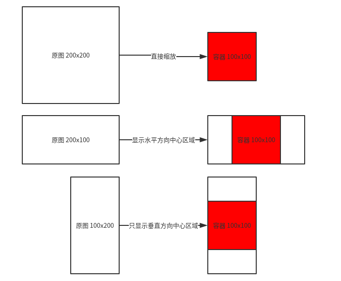

0x00 前言
最近接到个关于移动端适配的任务，因为希望复用 PC 端的数据所以有些东西实现起来比较麻烦，比如现在讨论的显示图片中心区域。原需求是这样的：在图片比例和要显示的容器比例一致时直接按比例缩放就好，但是如果图片比例和容器比例不一致，这时候就要以容器的比例为准，显示图片的中心区域。原谅我苍白的文字描述，下面直接给图：

0x01 如何获取 CSS 设置背景图的大小？
清楚需求后决定将图片以 CSS 的背景图显示，因为依稀记得 background-position 和 background-size 可以设置图片显示的位置和图片缩放比例，因为图片是通过设置 style 显示的，那么现在的问题是怎么能拿到图片的原始大小呢？我们知道 img 元素有 naturalWidth 和 naturalHeight 属性代表原始图片宽、高。那么现在我们就可以通过 js 获取 CSS 中图片的 url 然后通过 new Image() 并设置 src 不就能通过 naturalWidth 和 naturalHeight 的到原始图片的宽高了嘛！示例代码如下（依赖 zepto.js）：
1 | (function ($) { |
使用方法：
1 | $('.pic').getBackgroundSize(function(img, width, height){ |
0x02 如何只显示图片中心区域
现在我们已经知道原图的宽高和容器的宽高了，然后我们可以分别计算出它们的宽高比，通过比较宽高比我们就可以知道如何设置 background-position 的值了。下面先放代码：
1 | $('.pic').getBackgroundSize(function(img, width, height){ |
在图片宽高比与容器一致时 background-position 直接设置为 0 0，background-size 设置为 100% 100% 就好了。但是在不一致时 background-size 需要设置为 cover ，因为在图片过宽或过高时设为 cover 会超出容器并因此隐藏起来，这时设置 background-position 才是有效的。不过 background-position 不能直接是原始图片的大小而是经过 background-size 缩放后的大小，所以才会有 width = width * (boxHeight / height); 这样一句计算缩放后宽度的语句。
0x03 总结
上面的代码就基本能够满足需求了，但是这种方式仍然不是完美的解决方案啊。因为图片的中心也未必是最需要展示的内容啊，在一些既不符合比例的图片里还是不会显示重要内容的。还是觉得直接能有符合移动端比例的图比较合适，不过谁叫是老项目呢，要把以前的内容和方式都改了也是很麻烦的说。毕竟 “Done is better than perfect !”，先把砖搬完再说吧～